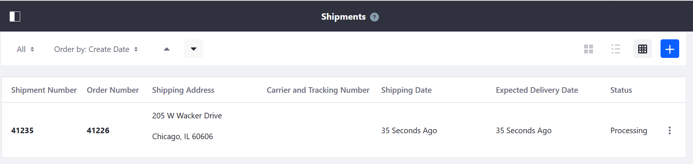
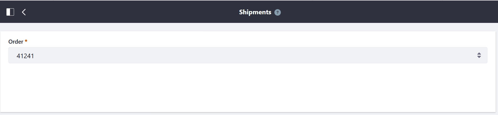
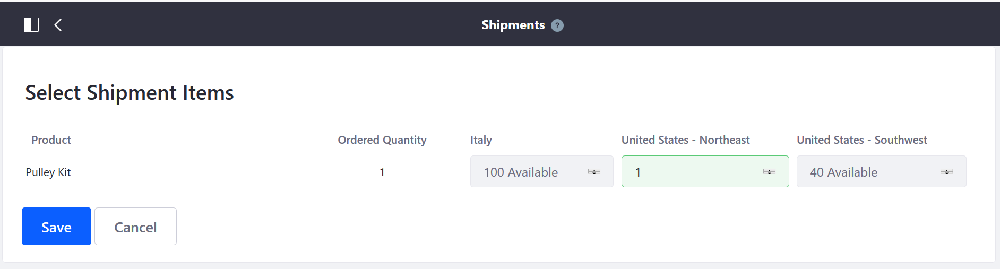
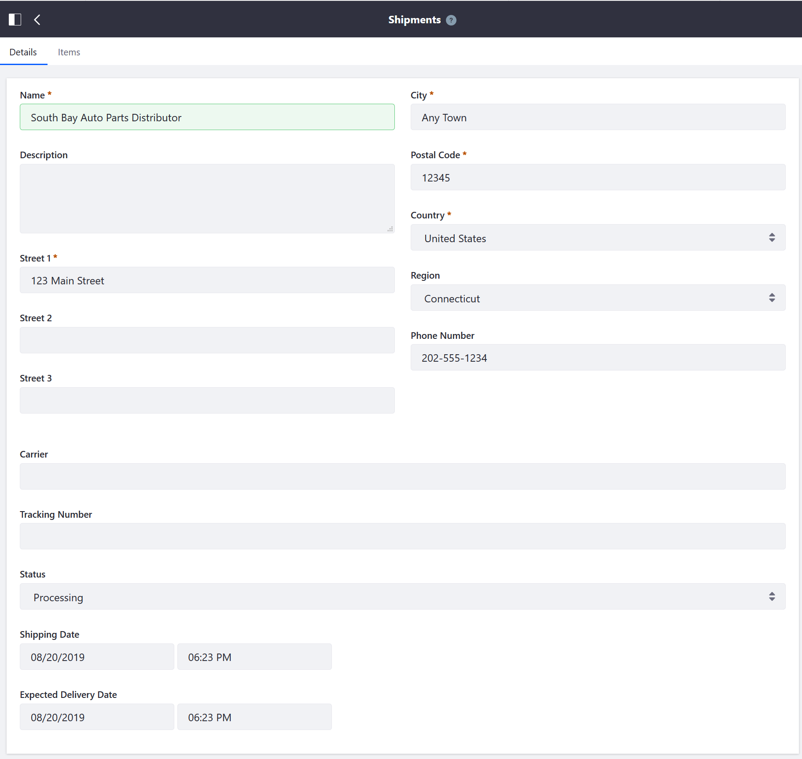
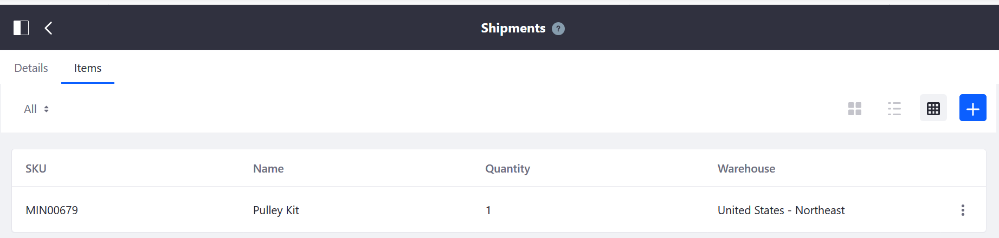
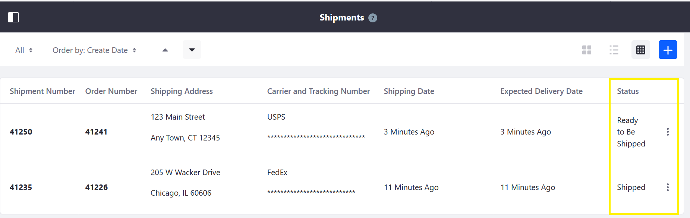

Creating a Shipment¶
This article describes how to create a shipment once an order has been received.

Creating a New Shipment¶
Navigate to the Control Panel → Commerce → Shipments.
Click the (+) button to add a new shipment.
Select an order from the dropdown menu (for example, 41241).

Click Save.
Enter the quantity from the corresponding warehouse.

Click Save.
Verify the shipping address.

Click Save.
The new shipment has been created.
Once a shipment has been created, there are several further actions an order manager may do with a shipment.
Verify the Items¶
Click the Items tab to verify that the items are correct.

Update the Shipping Status¶
- Click the Details tab.
- Enter the name of the carrier in the Carrier field (for example: USPS, FedEx, UPS)
- Enter the Tracking Number.
- Select a status from the Status dropdown menu (for example: Ready to be Shipped).
- Click Save.
The order manager can update the status of the shipment as needed, until the order is completed.
